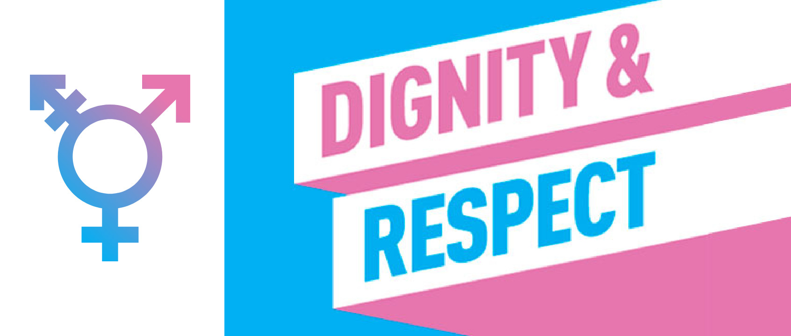

关于跨性别者个人身份信息的更改


最近，酷儿论坛收到了一位跨性别朋友的投稿，
内容是关于更改个人身份信息的经验分享～
（感谢这位可爱的朋友！）
让我们一起来看看吧！希望可以给大家带来帮助～

Warning：个人经验，仅供参考，不代表酷儿论坛官方观点。
各处更改经历
公证处
略复杂。第一次问的时候说是一定要医院当地公证处协查（因为一些原因无法在当地医院直接办公证），不能直接咨询医院。后来再去换了另一个公证员，问了说是因为医院可能会不理，要先去问一下医院能不能寄。问了医生说是可以寄给他，他来处理（不然可能在信箱躺半个月没人理），于是公函寄到医院然后等回执。若干天后的某个中午回执寄到公证处，下午拿回公证就飞奔回本地派出所申请改身份证。
（注：咨询医院/医生——寄公函到医院——医院回执寄到公证处——拿到公证书）
身份证
需要原身份证、户口本、公证书、医院的医疗诊断和三甲证明（原件）。
第1周：周三，申请的时候说要医疗诊断书和医院三甲证明原件，然而我的都给公证处说是留底了。。。问了一下照片是否可以，这里的人说应该可以，打印了照片并且写了一段文字说明。
第3周：周一，更上级的公安局说一定要原件。。（这时候正常流程可能会退回最底层派出所告诉你要补材料，我算是通过特殊关系先问到了）无奈，问医生，说是可以再给一份，于是和医生说好，让医院的护工阿姨帮忙盖章等，并找人帮忙寄出。周二中午寄到，送到公安局上交，当天傍晚我接到电话说可以回去办理身份证信息了。（正常可能会需要等待几个工作日）
周三去派出所办理了一下更改信息（末尾数字可能是自动生成， 我这边的情况则是手动更改，甚至还有两个备选方案），拍照，按指纹，要了更改信息证明（建议多要几份或者复印盖章），户口本也改了，并且由于正式身份证还要几天才能到，我先办了个临时身份证。
第4周：周三收到身份证。
学籍
第1周：周一咨询了学院的老师，需要身份证、户口本、医院证明、公安证明和申请书（申请改信息）。都要盖章，由于医院证明上次又只要了一份，后悔中我又联系医院再开了一份寄出来。终于等到学校上班，而我的身份证还杳无音讯，老师让我先用临时身份证，把材料先交上去。找到学校的相关老师，被告知申请书需写明要求更改的内容（学信网与教务系统的身份信息），老身份证也均需复印件，还好不是什么大问题。不过说是户口本复印件也要盖公安的章（其他改名字的材料上是有盖的），我说公安更改证明上有章，老师们也说没碰到过这样的例子，先递交试试，有问题再联系我。姑且算是在下班前成功递交材料了。
第2周：周三，因为一直没有反应，于是打电话问了一下，说是申请提交到学信网了，但是材料还没有交，需要等教育厅现场办公，而什么时候目前也没有通知。又打电话咨询教育厅，说走正常程序需要等大约两个月后的现场办公。不过再问另一个老师说是学校好像可以改，需要开会之后再看。
第3周：忙了一阵其他事情，周三发邮件问老师为啥还没改，回电话说上会后说是还要学院的知情书，于是找学院。学院方面和学校老师交涉一番后让我把材料复印一份交给辅导员，让辅导员写个知情书并给学院盖章签字。辅导员这边没有为难我，也很重视我的隐私。
周四，联系学校老师说可能要发公安局公函确认，由于我其他方面有紧急情况需要马上修改，老师联系领导后给我修改掉了。虽然还有些其他问题没有解决，不过学籍已经修改成功。由于身份证号码已变更，需用新的身份证号码重新注册学信网账号，自动绑定学籍。
护照
第1周：周四去出入境大厅改护照，十分顺利，带上了老的护照（有港澳台通行证的可一同办理）与户口本，新老身份证。按照指引去填表拍照等，没有人问什么奇怪的问题，基本上只说身份证号码改动了，甚至公安的信息更改证明都不需要。最多可能需要等几分钟，工作人员需要去咨询一下这个情况该如何处理之类。
第2周：周二中午收到台湾通行证，周三中午收到护照。
12306
改护照之前去了趟动车站，这边窗口的人就不太友好了。我说改了身份证号码，她们直说“这怎么可能改”。。最后我给她们看了下公安的证明，不过操作也就是销号，然后拿新身份证重新注册一个（我甚至怀疑有没有销号的必要，估计直接中心注册就好）不过临时身份证是没有办法核验的，只能用临时身份证窗口买票了。
支付宝
有些人就直接重新申请了，不过我选择了改信息（也挺快挺方便的）。找人工的工作人员说一下，会给你链接，把资料传上去就好，公安证明＋新身份证就好。注意临时身份证需加一张手持身份证的半身照，我一开始没上传，结果补上传的时候出了点幺蛾子，一直传不了。。最后的解决方案是重新申请一遍。不过也很快，我是一两个小时就解决了，还算上补传那些破事。
在最后会有人工打电话和你核实一些信息，基本就是确认你是本人，然而这个人工会反复地怀疑你不是本人，让你叫“本人”接听，这情况我应该不用多解释，大家都明白。。。这通电话确实让我十分不快，不过之后很快就邮件通知我审核过了，只能说效率还是很高的。
银行卡
某银行工作人员告诉我，临时身份证可以改，但是和二代身份证不同，之后换了正式的二代身份证还要再改，建议不急的话拿到二代身份证再更改，所以我是等到二代身份证后再更改的。
1. 销卡：就拿老身份证直接正常操作，和银行工作人员说销卡，会不会被质疑身份就看工作人员的工作素养了。。不过我觉得比改信息好点。
2. 中行更改信息：给问询台出一下公安证明就直接给我领号排队了，到柜台也是直接出示证明，递上银行卡、身份证，填个表签字就好。公安证明会留复印件，原件返还。
3. 手头还有一张建行信用卡，本来想销户的，但是被柜台的人质疑了是不是本人，无奈决定干脆直接改信息，不过柜台的人真的很糟心，发生了许多尴尬的事情。顺便一提，我是让窗口的人理解为公安信息登记错误更改信息的。
手机卡
这个也很方便，取号，柜台出示公安证明说明要改信息，然后等工作人员咨询、操作。
所需材料汇总
事项 | 材料（原件=盖红章） |
公证 | 医学诊断（医院证明）、 身份证、户口本（公证处会复印） |
身份证 | 医学诊断原件、医院三甲证明原件、公证书、原身份证、户口本 |
学籍 | 医学诊断原件、公安证明原件、新老身份证复印件、户口本复印件（最好盖章）、申请书、院系知情说明 |
护照 | 身份证、户口本 |
12306 | 原身份证+出示公安证明（只是注销账号） |
支付宝 | 上传照片，公安证明+新身份证 |
银行卡 | 身份证、银行卡、公安证明（留复印件拿回原件） |
手机卡 | 身份证、公安证明（留复印件拿回原件） |
写在最后
大致上这就是我更改各种信息的流程了，其他如果还有没注意到的实名的地方，要么就无所谓，或者十分方便，基本上只需要出示公安证明即可。
https://www.translives.net/news/676
这是我在办公证期间参考过的一个记录，也是比较详细的。
希望我写的这一点记录能对你有所帮助，如果还想询问其他更细节的情况或者其他交流可以联系邮箱：compileerror@qq.com